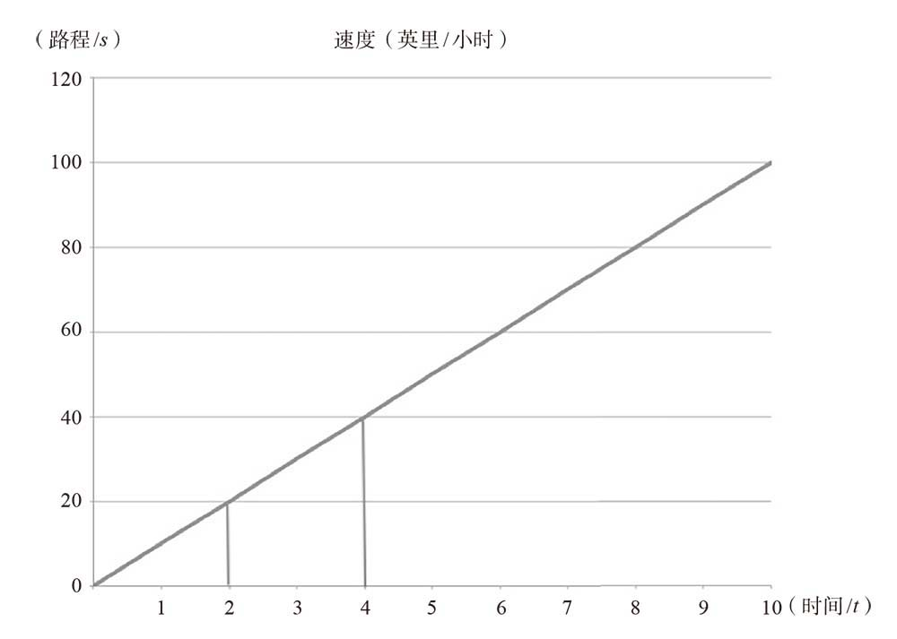
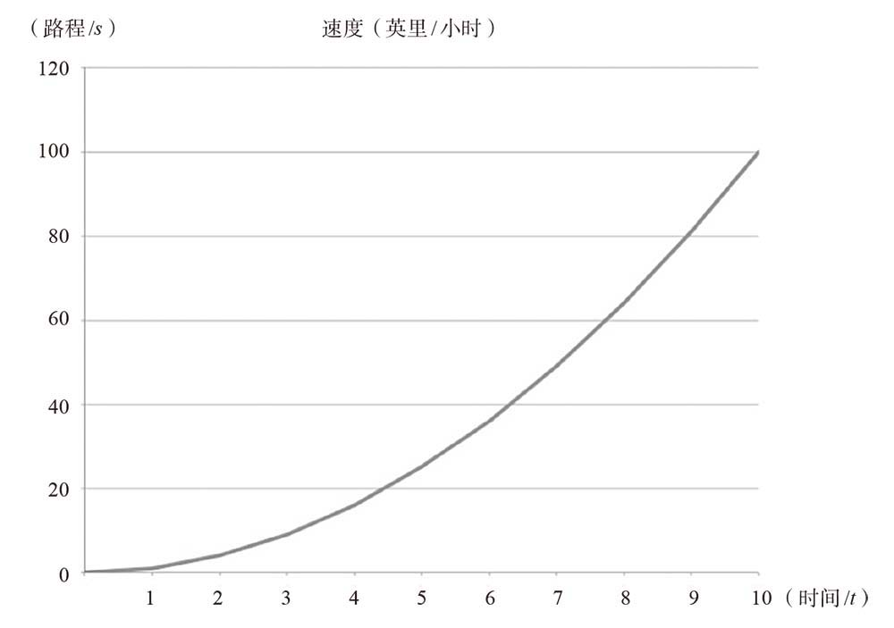
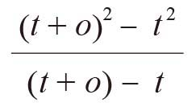
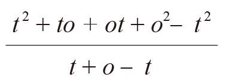
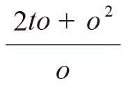

数学经历了很长时间才在科研活动中找到充分展示自己的舞台，原因之一就是人们的宇宙观中普遍充斥着一种超自然的神秘性。自然哲学家认为除月球运转轨道以外的所有事物都是完美的，是由一种与宇宙中其他事物都不相同的要素（所谓的第五元素）构成的，它们能够运转，是因为天使给了它们动力。在这种情况下，很难想象数学可以发挥任何作用。但是，伽利略打破了古希腊的宇宙模型，开创性地利用数学来预测抛射体和钟摆的运动轨迹。
艾萨克·牛顿站在这位巨人的肩膀上，绘制出宇宙力学图。借助伽利略的研究成果，只要掌握足够的数学知识、完美的数据和超强的计算能力，数学家就可以洞悉一切。牛顿是一名基督徒（尽管不是正统的基督徒），因此他不会公开宣扬，但是作为他的继承者、超级拥趸，18世纪的法国学者皮埃尔–西蒙·拉普拉斯[1]却没有任何迟疑。拉普拉斯是当时不多见的无神论者。（据说拿破仑曾经问拉普拉斯，上帝在他的哲学中处于什么位置？拉普拉斯回答说：“我不需要做那样的假设。”）牛顿认为，宇宙是一个异常复杂的机械装置，就像一座大钟，只要掌握足够的信息，拥有健全的智力，预测未来就完全有可能做到。他说：
假设有一位智者，他能理解所有驱动自然的力，以及形成各种力量的对应环境，并且能够分析这些数据，他就可以用一个公式来表示包括最大天体与最小原子在内的世间万物的运动情况。对于他来说，没有什么东西是不确定的。未来如同历史一样，在他面前一览无余。
牛顿永远也不会成为这样的智者，然而，当数学开始在科研活动中占据重要地位的时候，他通过计算，并借助一种新颖而神秘的数学方法——处理无穷小问题的流数术，提出了牛顿运动定律和万有引力定律。牛顿取得的成就非常重要，地位举足轻重。他的数学也许不能完美地预测未来，但是在预测作用力（尤其是神秘的万有引力）的大小及其效果时却展现出引人注目的力量。但是，为了不让他的读者感到害怕，抑或是为了让他的方法显得高深莫测，牛顿在创作他的代表作《自然哲学的数学原理》时，煞费苦心地把很多研究成果转化成传统的几何学。牛顿的世界就像一个钟表，表现出确定性和可预测性。
牛顿的成果可以转化成几何学形式，可能要归功于他的法国前辈、哲学家笛卡儿的研究成果。笛卡儿有两件事让人们难以忘记：“我思故我在”的宣言，以及以他的名字命名的“笛卡儿坐标系”。但这只是冰山一角，他的研究包罗万象，不仅涉及光学理论，他还试图从科学的角度研究灵魂。
笛卡儿坐标系的意义远不只是用一组数字表示一个点这么简单（早在13世纪，培根就已经知道这个方法了）。笛卡儿还创立了在几何形状与等效代数方程之间来回转换的解析几何学。例如，利用（x，y）坐标值，可以画出方程（例如y = x2 + 2x + 3）的图像。同样，自然界中有很多变化过程也可以绘制成图像，从而与代数方程对应起来，这样就可以大大降低预测结果的难度。
笛卡儿的这个方法使奥雷姆利用图像表示函数的想法变成现实，它将在牛顿的研究工作中发挥巨大的作用，使他的大多数代数研究成果隐藏在几何学的外衣之下。笛卡儿本人似乎也没有意识到这个概念到底有多大的影响力，他在《几何学》（La Géométrie）中介绍了这个概念，并且说这是一个非常简单的构建几何形状的方法。从本质上看，他认为这与牛顿将代数学问题转换为几何学问题的方法比较相似，而没有像现代人一样，看到它将空间问题转换为代数学问题的真正威力。但是，无论笛卡儿的目的是什么，他都为我们创造了一个将几何学问题转换为代数学问题的方法。几何学与我们周围世界的联系更直观，而代数学则给人一种更抽象的感觉，大多数的现代数学研究都采用了这种方法。
牛顿在数学领域取得的杰出成就——流数术古已有之，可以追溯至古希腊时代。古希腊人对图形不断进行分割，使之变成许多尽可能小的形状，然后计算这个图形面积的近似值。例如，如果想计算圆的面积，我们可以想象沿着半径的方向，将圆分割成一系列橘瓣状的平面图形。随着这些“橘瓣”越来越窄，它们就会越来越接近三角形，三角形的面积是很容易计算的。把这些“橘瓣”以相对的方向拼接在一起，所得到的形状就接近于宽为r、高为πr的矩形。即便你不是数学天才，也可以计算出圆的面积。
尽管这类方法最早是在古希腊时代提出来的，但是直到15世纪，德国哲学家尼古拉斯才用这个方法计算出我们所熟悉的πr2。他认为，这个方法计算的其实是数量无穷多、面积无穷小的一个个图形的面积，因此不是一个严格的数学方法，不能得出精确的结果。但是，他承认这个方法可以有效地对正确答案进行预测，因为随着分割的图形越来越小，它们重新拼接而成的形状将越来越接近标准的矩形。
还有一些人也接受了这个方法，其中最著名的当属天文学家约翰尼斯·开普勒，但是，真正解决无穷小问题的却是与牛顿同时代的约翰·沃利斯。如果不是被牛顿的光芒所掩盖，这位数学家的名气将会大得多。例如，他提出，我们可以认为那些用来计算总面积的小形状可以“稀释”，也就是说，它们可以根据需要变得非常小，但又不会彻底消失。这个词显然会让人们联想到牛顿取得重大突破时采用的那个方法。牛顿在提出流数术时，考虑的就是流动量（流数术这个名称由此而来）。牛顿的流数术不仅帮助他获知了万有引力的奥秘，还在数学家之间引发了一场持续百年的争论。
从艾萨克·牛顿的家庭图书馆的目录就可以看出，他的兴趣非常广泛。到他去世时，他拥有大约2 100本藏书。这在当时是非常了不起的藏书量，他所在的学院——剑桥大学三一学院所拥有的藏书还不到他的两倍。他有235本物理学和数学方面的书，有138本炼金术方面的书，神学方面的书也非常多，有477本。此外，他还有207部文学作品、46本游记、31本经济学著作，以及6本关于勋章的书（牛顿后来担任英国皇家造币厂厂长，负责铸造钱币和勋章）。由于兴趣广泛，相较科学研究，他花在炼金术与神学上的时间多得多。
即便如此，牛顿仍然为科学做出了巨大的贡献，包括对光与颜色的研究和发现万有引力定律。他的力作《自然哲学的数学原理》是在流数术的基础上写成的，这个功能强大的方法从本质上看是一种数学工具，它给人一种违背自然规律的感觉，因为它的目的是预测宇宙间所有事物的行为。
牛顿晚年被奉为科学界第一名人，随之而来的是“牛顿神话”，人们认为牛顿在20岁出头的时候就发明了流数术。当时，由于爆发了一场瘟疫，剑桥大学疏散了校内人员，牛顿被迫回到林肯郡的家庭农场休假。在此期间，他进行了一番思考，但是，从他留下的笔记来看，牛顿的流数术显然是花费了20年的时间才逐渐成熟的。
牛顿的流数术也可以将图形分割成越来越窄的许多小形状，然后计算图形的面积。但是，牛顿提出这个新的数学方法的主要目的是，计算加速度等随时间变化的因素，这对于研究万有引力，以及比较月球绕地球运转与苹果自由落体运动之间的异同都具有非常重要的意义。利用牛顿的流数术计算加速度，就可以理解这个方法的原理。计算时需要使用几个方程，尽管这些方程非常简单，但是如果大家觉得有难度，可以跳过不读。
加速度是速度（包括速率和方向）变化量与时间的比值。为方便起见，我们在本例中假设运动方向保持不变，这样我们只需考虑速率的变化量。这是一种稳定的“线性”关系。假设1秒钟后的速度是每小时10英里，2秒钟后是每小时20英里，3秒钟后是每小时30英里，以此类推。为了计算出加速度，我们可以认为它就是一秒钟时间里速度的变化量。在本例中，速度每秒钟的变化量是10英里。研究这种加速度的一个便利方法，就是把它看作山的坡度。观察上图，就可以看出速度随时间的变化情况。

加速度就是这条直线的倾斜度，即斜率，是速度变化量与时间变化量之比。但是在现实世界中，很多关系并不像直线那样简单。例如，牛顿很早以前就知道，万有引力遵循平方反比定律，也就是说，万有引力的大小与物体和引力源距离的平方之间存在某种关系。把速度按照这种关系发生变化的情况绘制成图像，得到的将不是一条直线，而是一条曲线。
下面我们研究一下速度与时间存在简单平方关系时的加速度。在这种情况下，速度与时间的关系可以绘制成下面这个图。

由于该图不像直线那样便于处理，所以我们不能直接用速度变化量除以时间变化量来计算加速度。但如果我们考虑一个非常短的时间段，那么这段曲线就近似于一条直线。因此，我们可以利用速度变化量除以时间变化量的老办法，计算出一个加速度的近似结果。牛顿当年就是这样做的。我们用s表示速度，用t表示时间。牛顿把那个短暂时刻里的微小时间增量称作“流动量”，并用一个类似于扭曲的零的符号（o）表示。因此，在这个短暂时刻里时间的变化量是（t + o） – t，时间变化又导致速度发生了变化（别忘了，s = t2）：
(t + o)2 – t2
也就是说，我们可以用速度变化量除以时间变化量求出加速度：

展开完全平方式，然后去掉括号，就会得到：

上式化简后变成：

分子、分母同时消去o，就会得到：
2t + o
最后，我们略去小小的流动量o，就会得到答案2。这个答案是正确的。至此，我们已经计算出当时间为t时，加速度是2t。但在得出这个正确答案的过程中，某些步骤有些不可靠，令人担心。既然o最终变成0，那么在前一步中，分子、分母同时消去o的做法就会涉及0除以0。我们已经知道，这种运算不符合数学法则。
牛顿非常清楚这个问题，因此他试图通过一种相当于约分的方式予以解决。他说，他处理的是比值，而且他的流动量就像约翰·沃利斯说的那样，是可以稀释的，意思是流动量可以消失，但并不真的等于0。这个理由并不高明，但是流数术的确有效，牛顿也没有因为它不完全符合数学运算法则就放弃它。在《自然哲学的数学原理》一书里，他尽量将代数运算过程转换为几何证明，以便尽可能地掩饰这个问题，但是他很快就遇到一个更加迫切的问题：竞争。
竞争压力来自德国数学家戈特弗里德·威廉·莱布尼茨。据我们所知，在牛顿发明流数术的同时，莱布尼茨也在独立进行着同样的研究。牛顿知道德国人正在进行这项研究，因为他和莱布尼茨都与伦敦的英国皇家学会有联系。牛顿和莱布尼茨之间有过几次充满猜疑的通信交流，其中一封信非常有名，因为牛顿在信中写下了这句话：
我现在无法继续解释流数术，因此我宁愿将它隐藏在这段密码中：6accdæ13eff7i3l9n4o4qrr4s8t12vx
牛顿的做法是当时的一个学术惯例：用一句话概括流数术，然后把句子中字母的频率记录下来，用作保护自己成果的密码。牛顿这样做的目的是宣示自己的首发权，但根据解码后的那句话——Data æquatione quotcunque fluentes quantitates involvente, fluxiones invenire: et vice versa（已知包含若干流动量的方程，求流数；或者反过来，已知流数，求流动量），我们很难确定他的方法到底是什么。（后来，他又进一步做出了比较隐晦的澄清。）此时，牛顿完全可以公开发表他的方法并夺得首发权，但是直至去世，他也不愿意分享自己的想法，很多时候都是在同事的恭维下他才肯透露一二的。对于自己的成果，他总是秘而不宣。
1684年，莱布尼茨公开发表了他的研究成果，并为这项与流数术有异曲同工之妙的研究成果起了个名字——微积分。他的这个举动令牛顿对他的猜疑之心达到了顶点。莱布尼茨使用的是一套迥然不同的符号，而且实践证明这套符号使用起来更方便，但是它的原理与牛顿的流数术如出一辙。牛顿使用的是一种点状符号，比如，在字母x上方加一个点，表示它的变化量，而莱布尼茨从希腊字母δ表示较小变化这个传统用法中得到灵感，用字母d表示被牛顿称为流动量的无穷小变化，即莱布尼茨的表示方法是dx/dt。这个符号不仅更清楚，而且处理起来更加方便。
莱布尼茨还为这种“微分”（按照尼古拉斯提出的办法，将许多小形状拼接在一起，以计算整个图形的面积）的逆运算设计了一个独特的符号。他把微分的逆运算称作积分，并用拉长的S——∫（来自拉丁语中表示求和的词）作为积分符号。牛顿的抱怨没有充分的正当理由，不发表研究成果也是他自己的决定。但是，由于牛顿的种种质疑，英国数学家都认为莱布尼茨有剽窃之嫌。
1708年，苏格兰数学家约翰·基尔在英国皇家学会的《哲学会刊》上发表文章，对莱布尼茨进行了直言不讳的指责（很有可能是牛顿要求他这样做的），气氛变得紧张起来。由于牛顿和莱布尼茨都是英国皇家学会的成员，因此英国皇家学会宣布成立一个11人委员会调查此事，以确定首发权的归属。由英国皇家学会会长亲自撰写的报告表明，情况对牛顿更有利。然而，这个结果并不令人感到奇怪，因为英国皇家学会当时的会长正是艾萨克·牛顿。从此以后，英国数学界与欧洲大陆数学界之间的关系降到了冰点，并且在随后几十年里都没有改善。
无论这两位数学家采取的是什么方法，无论到底是谁先创立了微积分，他们后来都遭到了哲学家乔治·伯克莱的猛烈攻击。这位主教在一篇文章中指出，牛顿和莱布尼茨在某些方面误入了歧途。这篇文章有一个气势恢宏的标题——“致分析家，或一位不信奉上帝的数学家”。伯克莱所说的那位不信奉上帝的数学家可能是指天文学家埃德蒙·哈雷，因为牛顿出版《自然哲学的数学原理》一书时得到了哈雷的帮助。哈雷是无神论者，他对伯克莱的信仰提出了质疑。作为回应，伯克莱对流数术进行了讨伐。
伯克莱给流数起了一个富有诗意的名称——“逝去量的鬼魂”，并且指出，尽管流动量在计算过程中变成0，但后来它又回来了。要采用这样的方法，似乎必须借助信仰的力量，才能让人们接受一种无法想象的概念。伯克莱认为，那些批评宗教的人是表里不一的伪君子，因为他们的这个做法与宗教没有任何区别。无论这位主教是出于什么目的，我们已经知道，他提出的那个问题确实存在。的确，如果在运算过程中把那些无穷小量当作0来处理，流数术（也就是微积分）就是可行的，但这样的处理在数学上却是行不通的。
伯克莱称，牛顿和莱布尼茨能得出正确答案纯属运气好，是两个错误相互抵消的结果。他说：“接连出现两个错误，反而歪打正着得出了正确答案，但这不是科学。”牛顿的辩解理由是，这些极小的变化量具有流动性，它们并没有彻底消失，而是处于逐渐消失的状态。在上例中，当2t + o变成2t时，牛顿可以说结果趋近2t，是因为o趋近0，但是这个无穷小量永远不会真正等于0。从数学的角度看，这个解释只能算语焉不详、理由不充分的权宜之计。直到19世纪，才有两位数学家为微积分堵上了这个漏洞，彻底解决了这个问题。
19世纪20年代，奥古斯丁·路易·柯西重新定义了微积分中的无穷大和无穷小的概念，称它们是变量，意思是它们都趋近某个数值。随后，19世纪50年代，卡尔·魏尔斯特拉斯引入了极限的概念，这是我们今天仍使用的标准方法。有了极限的概念，我们就可以把某个终值确定为某个变量为无穷小时得到的极限值，条件是终值接近这个极限值的速度快于某个最低限度。魏尔斯特拉斯通过严格的证明告诉我们，只要接近极限值的速度足够快，微积分的方法就肯定有效。从某种意义上说，魏尔斯特拉斯在微积分计算的过程中抛弃了潜无穷的概念，而只要求接近极限值的（有穷）速度必须足够快。
我们将在第12章详细讨论无穷大这个概念，但是现在，我们只需知道这个概念在现实世界非常难以理解，甚至不可能被人们理解，然而，它对数学却产生了深远的影响。这个概念使牛顿的力学世界成为现实，从而证明了它具有无与伦比的价值。尽管极限概念的确立意味着无穷大永远失去了用武之地，但是微积分利用无穷小和无穷大搭建出的神奇的数学世界，就这样悄无声息地潜入了现实世界。在尘埃落定之后，人们惊奇地发现它与现实世界的关系竟然十分和谐。
微积分要求我们想象瞬间发生的情况，然而在极其短暂的瞬间，任何事似乎都不可能发生。古希腊哲学家芝诺提出的一个著名悖论——飞矢不动悖论，反映的就是这个问题。尽管下面的这个设想与飞矢不动悖论在文字表述上有所不同，但这是想象飞矢运动情况的最有效办法：我们可以想象一共有两支箭，一支飘浮在我们眼前的空中，静止不动，而另一支箭从弓弦上射出，闪电一般从第一支箭旁边飞过。
假设在第二支箭与第一支箭并排的一瞬间，我们冻结时间，然后研究这两支箭。在那一刻，这两支箭似乎一模一样。一支箭在运动，另一支则没有运动，但两支箭都悬浮在空中。芝诺说，我们不能区分两者状态的不同，说明我们对运动和变化的理解是非常片面的。
现在，我们知道这两支箭的物理属性在某些方面明显不同：那支运动的箭有惯性。尽管在时间静止的状态下我们无法感知这一点，但是惯性依然存在。此外，狭义相对论明确指出，物体在运动时，质量会变大。因此，如果古希腊人有能力，就可以比较两支箭的精确质量，从而区分它们的状态。
飞矢的这个比喻不是很好理解，但它还是说明了微积分的一个特点。尽管给人一种比较奇怪的感觉，但是微积分及其在探索自然时的应用方式都建立在现实世界的基础之上。如果我们可以处理时间上的瞬时概念和空间位置上的无穷小变化的概念，微积分就是一种非常自然的数学方法。毕竟，它不是晦涩难懂的数学研究的产物，而是在不断拉近视野，研究世界上事物的运动情况的过程中获得的成果。
从某种意义上说，微积分的研究对象正是牛顿的“机械宇宙观”。受到它的启发，拉普拉斯设想，如果我们掌握了足够多的信息，就可以根据过去预测未来。但在牛顿完成他的研究之前，已经有人埋下了种子，希望可以借助数学对未来进行不太确定的预测——基于机会和条件的预测。
[1] 皮埃尔–西蒙·拉普拉斯（1749—1827），法国天文学家、数学家，法国科学院院士，天体力学的主要奠基人。——译者注